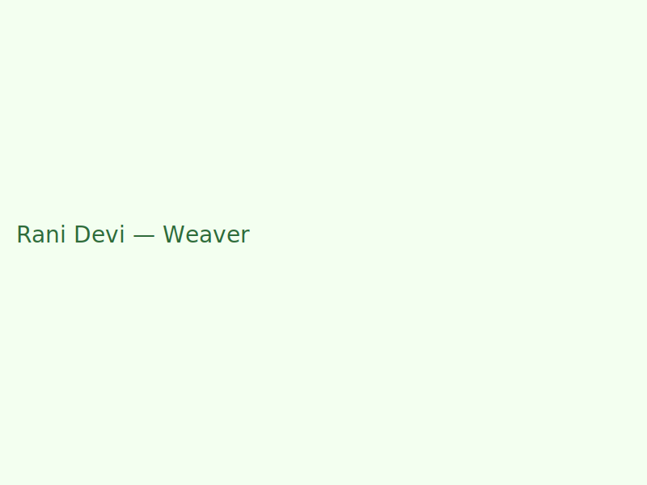
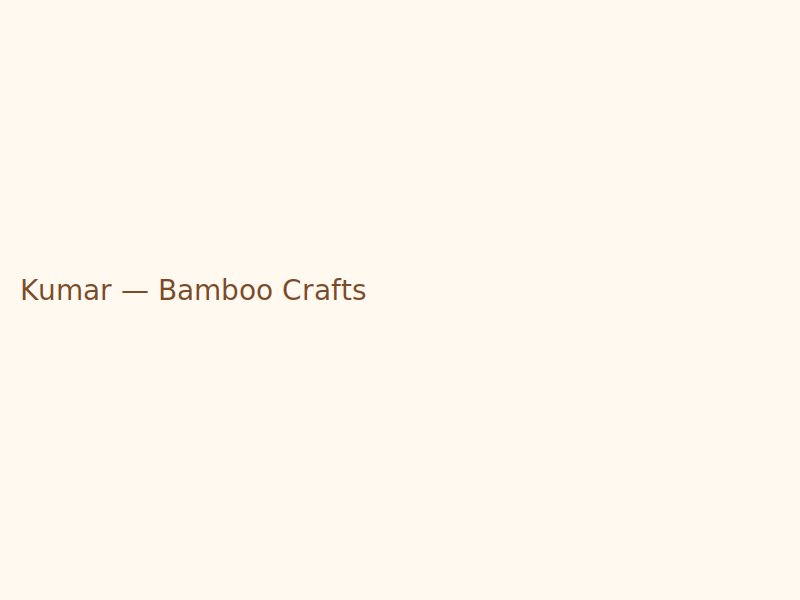

Culture & Heritage
Jharkhand's tribal communities preserve music, dance, crafts and festivals. Respect local customs, ask permission before photographing sacred rituals.

Festivals & Fairs
Plan visits during local mela and harvest festivals to witness rituals and markets.

Handloom & Weaving
Traditional motifs and dyeing techniques are community-specific and passed down generations.

Bamboo & Pottery
Sustainable craft forms using local materials; buying directly supports artisans.